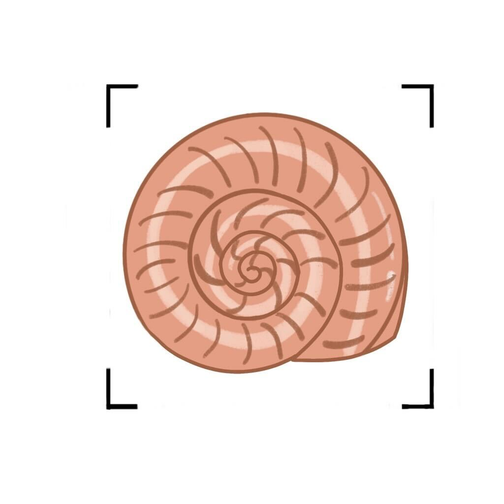

About SeeShell
SeeShell is a mobile app that enhances shell collecting by using image recognition to identify shell species.
It provides educational information about the shells' stories, evolution, and origins. The app appeals to beachgoers
and collectors, allowing them to manage digital collections. SeeShell offers an engaging experience for those interested
in exploring the ocean's mysteries while beachcombing.
Project Overview
During the Spring semester of 2023, I had the privilege of collaborating with Alexander Johnson, Eron Neill, Leah Schneidereit,
Ahmed Elgazar, and Thomas Smith on an exciting full-stack application project we named 'SeeShell'. As part of the Software Engineering
(CSC 550) course at UNCW, our goal was to develop a functional software system while achieving the learning objectives for the course.
Our project involved developing SeeShell, an application that uses machine learning to match and identify seashells from user-captured
images. Our goal was to create a user-friendly tool for shell collectors, providing a seamless experience for shell identification and
learning. We worked diligently to achieve project milestones within the specified deadline of May 4th, 2023.
Project Description
Experience the ultimate beachcombing adventure with SeeShell, a mobile app that transforms shell collecting. Simply snap a photo or
upload an image of a seashell, and our advanced image recognition technology instantly identifies its species from a comprehensive
database. Dive into the captivating world of shells, manage your digital collection effortlessly, and embark on an interactive and
educational journey along the shoreline.
Scope
The scope of the SeeShell project entailed developing a mobile application that enhanced the shell collecting experience for beachgoers
and avid shell collectors. The application allowed users to capture photos of shells and utilized a machine learning algorithm for
species identification. Upon identification, the app provided educational content about the specific shell species, including its
evolutionary history and origin. Users had the ability to manage a digital collection of their found shells within the app. To ensure
accessibility and convenience, the app supported offline functionality, enabling users to upload shell images even without an internet
connection. The project was delivered within a 16-week timeline, with the initial release focused on delivering basic functionality,
while future work was considered for implementing more advanced features. Our team prioritized the development of critical features to
ensure a valuable and robust mobile application for users.
Features
- Image Capture and Recognition: The app will enable users to capture photos or upload images of shells using their
phone camera. Leveraging image recognition technology, the app will match the shell to a species from a comprehensive database.
- Image Saving: Matched shell images will be automatically saved to a digital collection within the app. Users will
have the ability to view their collection and access species information at any time.
- Account Management: The app will provide users with the option to create an account or log into an existing account.
This feature ensures that their digital collection information remains accessible and up to date.
- Digital Collection Management: Users will have the ability to manage their digital collection of shell photos within
the app. This includes features such as adding titles to images and deleting unwanted photos from the collection.
Functionalities
- Image Capture and Recognition:
- Capture a photo of a shell using the phone camera.
- Upload an image of a shell from the phone gallery.
- Utilize image recognition technology to match the shell to a species from a database.
- Display the best match of the shell species and provide information about the shell.
- Account Management:
- Allow users to create an account with credentials.
- Enable users to log in to their accounts.
- Maintain user authentication data in the database.
- Provide access to the app and user-specific information upon successful authentication.
- Digital Collection Management:
- Automatically save captured shell images.
- Save species information and shell photos locally.
- Allow users to view their digital collection of shells.
- Enable users to delete images from their digital collection.
- Allow users to add a title/location to the image (future work).
Implementation Details
Technologies Used
Programming Languages
- Python: The entire client-server architecture was built using Python.
Client-Side Technologies
- Kivy: A cross-platform Python framework used for creating the user interface on Android devices and other platforms.
- KivyMD: A library that provides Material Design components and styling for Kivy applications.
- Camera4kivy: A library used to access the device's camera functionality.
- Plyer: A library used to access various hardware and built-in functionalities of the device.
- Pyjnius: A Python library that allows interaction with Java code, used for accessing device features.
- Requests: A library used for sending data from the client to the server.
- Apscheduler: A library used for scheduling and executing periodic tasks in the background of the client app.
Server-Side Technologies
- Flask: A Python web framework used to create the server-side API.
- SQLAlchemy: A Python SQL toolkit and Object-Relational Mapping (ORM) system used for efficient connectivity to the MySQL database.
- PyMySQL: A Python library used for secure connectivity to the MySQL database.
- TensorFlow: A machine learning framework used for training and deploying the machine learning models.
- Matplotlib: A plotting library used for data visualization in the server-side components.
- IBM Watson Machine Learning: Used for hosting and inference of the trained machine learning model.
- Bcrypt: A library used for password encryption.
- Cryptography: A library used for cryptographic operations.
- JSON and SimpleJSON: Libraries used for handling JSON data.
Version Control and Collaboration
- GitHub: Used for version control of the project.
Communication and Collaboration Tools
- Slack: Used for team communication.
- Zoom: Used for meetings and video conferences.
Documentation and Office Tools
- Microsoft Office: Used for documentation and office-related tasks.
Team Coordination and Scheduling
- When2meet: Used for coordinating team member availability.
File Sharing and Storage
- OneDrive: Used for file sharing and collaboration.
External Integrations
- MolluscaBase: An API used for bulk data download.
- IBM Watson: Used for hosting the trained classifier model and performing inference.
- University of Macau: Used for the shell image dataset.
Additional Tools
- Android Studio: Used for Android app testing and emulation.
Visuals & Support
Front End User Interface
My Role
- Logo Creation
- Front-End Development
- Documentation
Results
We successfully developed a functional and scalable system as our end result.
Project Duration and Team Size
In our group, consisting of six members, including myself, we embarked on a 16-week project duration. In total, our group spent 468
hours to complete the project. Utilizing the agile methodology, we crafted a comprehensive plan that outlined the sprints and their
corresponding activities throughout the project timeline. This approach aimed to foster flexibility while maintaining the essential
structure required to effectively manage the software project's scope and timeline.
Project Repository
Project Documentation
Report